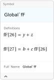

Isolate[expr] substitutes abbreviations KK[i] for all Plus[...] (sub-sums) in expr. The inserted KK[i] have head HoldForm. Isolate[expr, varlist] substitutes KK[i] for all subsums in expr which are free of any occurrence of a member of the list varlist. Instead of KK any other head or a list of names of the abbreviations may be specified with the option IsolateNames.
Overview, IsolateNames, Collect2.
t0 = Isolate[a + b]\text{KK}(24)
t1 = Isolate[(a + b) f + (c + d) f + e, f]e+f \;\text{KK}(24)+f \;\text{KK}(25)
StandardForm[t1]e+f \;\text{KK}[24]+f \;\text{KK}[25]
{t0, t1, ReleaseHold[t1]}\{\text{KK}(24),e+f \;\text{KK}(24)+f \;\text{KK}(25),f (a+b)+f (c+d)+e\}
Isolate[a[z] (b + c (y + z)) + d[z] (y + z), {a, d}, IsolateNames -> fF]\text{fF}(27) a(z)+\text{fF}(26) d(z)
Information[fF]
Global`fF\text{fF}
fF[26] = y + zy+z
fF[27] = b + c HoldForm[fF[26]]b+c \;\text{fF}(26)
Isolate[a - b - c - d - e, IsolateNames -> l, IsolateSplit -> 15]l(29)
Clear[t0, t1, l, fF]